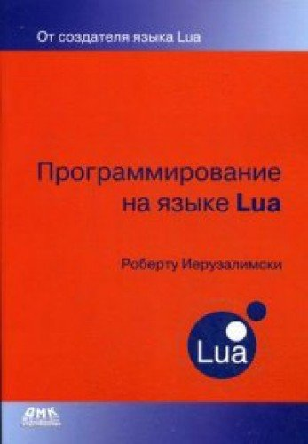

This book is a detailed and authoritative introduction to all aspects of Lua programming written by Lua's chief architect.
Programming in Lua provides a solid base to any programmer who wants to use Lua. It covers all aspects of Lua—from the basics to its API with C. The book is the main source of programming patterns for Lua, with numerous code examples that help the reader to make the most of Lua's flexibility and powerful mechanisms. The book is targeted at people with some programming background, but it does not assume any prior knowledge about Lua or other scripting languages.
When you buy a copy of this book, you help to support the Lua project.
For the official definition of the Lua language, see the reference manual.

|
Programming in Lua
by Roberto Ierusalimschy
Lua.org, August 2016 ISBN 8590379868 (also available as an e-book) |
The fourth edition updates the book to Lua 5.3 and marks a complete reorganization of the text. Building on many years of experience teaching Lua, Roberto has restructured the book to present the material in a growing order of complexity, allowing the reader to better absorb the character of the language.
The book is available at the main online stores and also as an e-book.

|
Programming in Lua
by Roberto Ierusalimschy
Lua.org, January 2013 ISBN 859037985X (also available as an e-book) |  |
Programmirovanie na iazyke Lua
by Roberto Ierusalimschy
DMK-press, 2014 ISBN 5940747671 |

|
Programando em Lua
por Roberto Ierusalimschy
LTC, January 2015 ISBN 9788521626992 |
The third edition is aimed at Lua 5.2 and can be used with other versions. It brings substantial new material. All chapters include exercises, ranging from simple questions about the language to full small-size projects.
The book is available at the main online stores and also as an e-book.

|
Programming in Lua
by Roberto Ierusalimschy
Lua.org, March 2006 ISBN 8590379825 |
The second edition was aimed at Lua 5.1 and remains quite relevant for later versions.
The book is still available at the main online stores. It is also available in German, Korean, Chinese, and Japanese.

|
Programming in Lua
by Roberto Ierusalimschy
Lua.org, December 2003 ISBN 8590379817 |
The first edition was aimed at Lua 5.0 and remains largely relevant. It is freely available online for personal use.